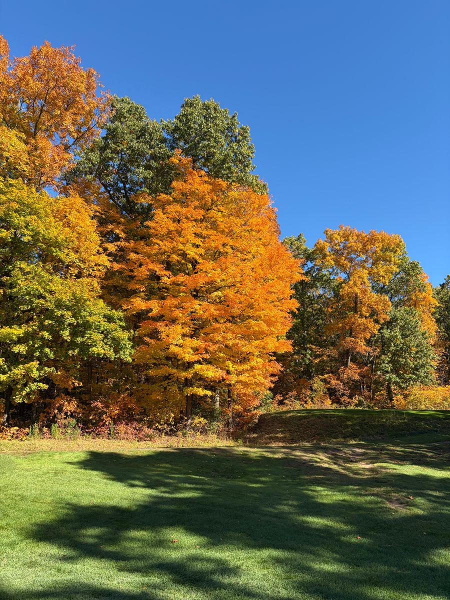
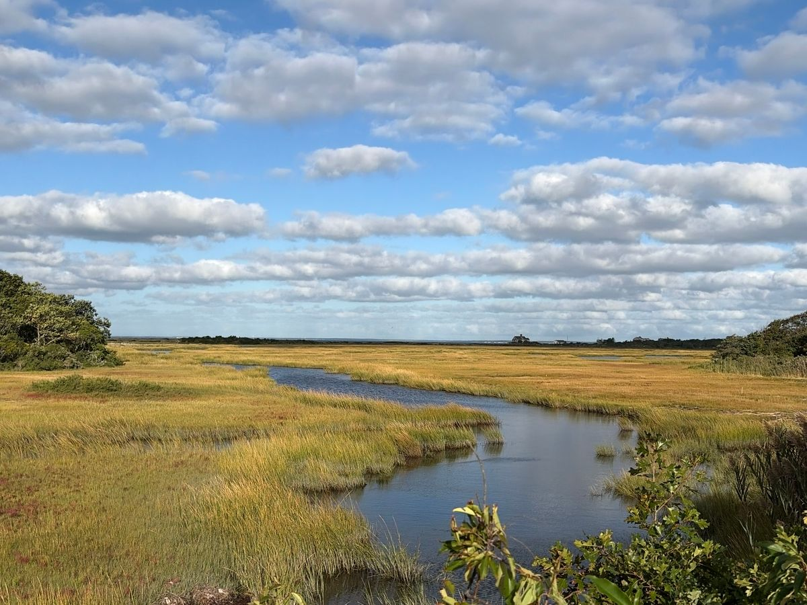

Gallery


About
[Placeholder — Mike to write: a short bio, what he likes to photograph, and how to get in touch.]
Contact: [placeholder — Mike to add contact details]


[Placeholder — Mike to write: a short bio, what he likes to photograph, and how to get in touch.]
Contact: [placeholder — Mike to add contact details]